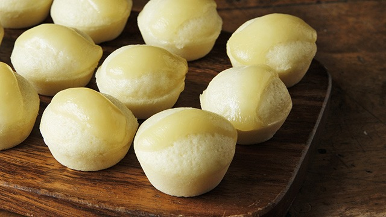

Puto
Puto is the soft, fluffy cloud of Filipino snacks! These bite-sized rice cakes are the perfect balance of sweet and savory, often topped with cheese or salted egg for that extra wow factor. Whether it's a morning snack with coffee, a side dish at a fiesta, or something to munch on while watching your favorite show, puto always knows how to make your day a little sweeter. Plus, who can resist its adorable little form? "Isang puto pa nga!" It's the Filipino comfort food that's always there when you need a pick-me-up!

Ingredients:
- 2 cups rice flour
- 1 cup sugar
- 1 tablespoon baking powder
- 1/2 teaspoon salt
- 1 cup coconut milk
- 1/2 cup water
- 2 large eggs
- 2 tablespoons melted butter or margarine
- Cheese slices (optional, for topping)
- Salted egg slices (optional, for topping)
Recipe:
- Prepare the Steamer:
- Fill your steamer with water and bring it to a boil. Grease small cupcake or muffin molds with oil or cooking spray.
- Mix Dry Ingredients:
- In a bowl, whisk together rice flour, sugar, baking powder, and salt.
- Combine Wet Ingredients:
- In another bowl, beat the eggs. Add coconut milk, water, and melted butter, then mix well.
- Combine Wet and Dry Mixtures:
- Gradually add the wet mixture into the dry ingredients while stirring to avoid lumps. Mix until smooth.
- Pour into Molds:
- Pour the batter into the prepared molds, filling them about 3/4 full.
- Steam the Puto:
- Place the molds into the steamer and cover with a clean kitchen towel under the lid. Steam for 15–20 minutes or until a toothpick comes out clean.
- Add Toppings (Optional):
- After steaming, place a slice of cheese or salted egg on top of each puto and steam for another 3–5 minutes to melt the cheese.
- Cool and Serve:
- Let the puto cool for a few minutes before removing them from the molds. Serve warm or at room temperature.
Puto is perfect for merienda, parties, or as a snack with coffee! Soft, fluffy, and so versatile!